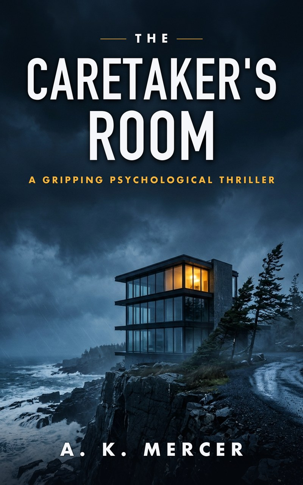

Domestic & Locked-Room Psychological Suspense
A. K. Mercer
Author of The Caretaker’s Room: A Gripping Psychological Thriller
Three rules for winter at Glass Point: keep the third-floor wing locked, trust no rumors about the last caretaker, and never miss your morning check-in.
Burned out and drowning in bills, social worker Nora Vance jumps at a four-month job watching billionaire Julian Voss’s isolated Maine cliffside estate. Rent-free quiet and a $45,000 escrow bonus seem like an escape—until a November gale floods the only road off the peninsula, radiant heat spikes behind the sealed third-floor door, and a diary hidden under a kitchen drawer ends mid-sentence.
Glass Point · Maine Coast
Behind Locked Glass, Every Detail Is a Clue
-
01 · THE LOCKED THIRD FLOOR
2:14 A.M. Activity
Winterized and sealed before Nora arrived—yet smart-home alerts fire in Zone 3 every night while an unknown tablet logs onto the private mesh.
-
02 · HANNAH’S MISSING PAGES
A Warning Cut Short
Taped beneath a kitchen drawer sits the previous caretaker’s notebook, tracking strange knocks behind glass until her final line breaks off.
-
03 · FLOODED CAUSEWAY
One Storm-Cut Peninsula
Saltwater surges over the only road back to the mainland while distant owners insist Nora is only imagining an empty house.
About A. K. Mercer
A. K. Mercer writes tense, atmospheric domestic and locked-room psychological thrillers built around isolated settings, claustrophobic family dynamics, and tightly engineered fair-play twists.
The Caretaker’s Room is Mercer’s debut psychological suspense novel—designed for late-night, one-sitting reading where careful silence becomes the sharpest weapon inside closed glass.
Official Contact & ARC / Verification Inquiries
For reader notes, advance review copy (ARC) inquiries, rights questions, or Goodreads / bookstore author verification for A. K. Mercer, contact: